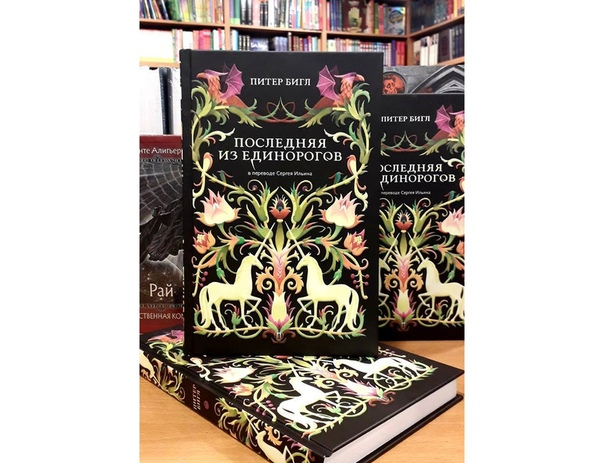

Описание
Роман Питера Бигла, известного американского писателя и сценариста, о предназначении последней из единорогов стал классикой фантастической литературы. Символичность богатого художественного языка и сюжета превращает чтение в ожидание прикосновения к чуду. И подобно героям, увидевшим единорога-спасителя, читатели, будто завороженные, движутся по следам тайны, чтобы никогда не забыть это ее волшебное прикосновение.
Где купить?.